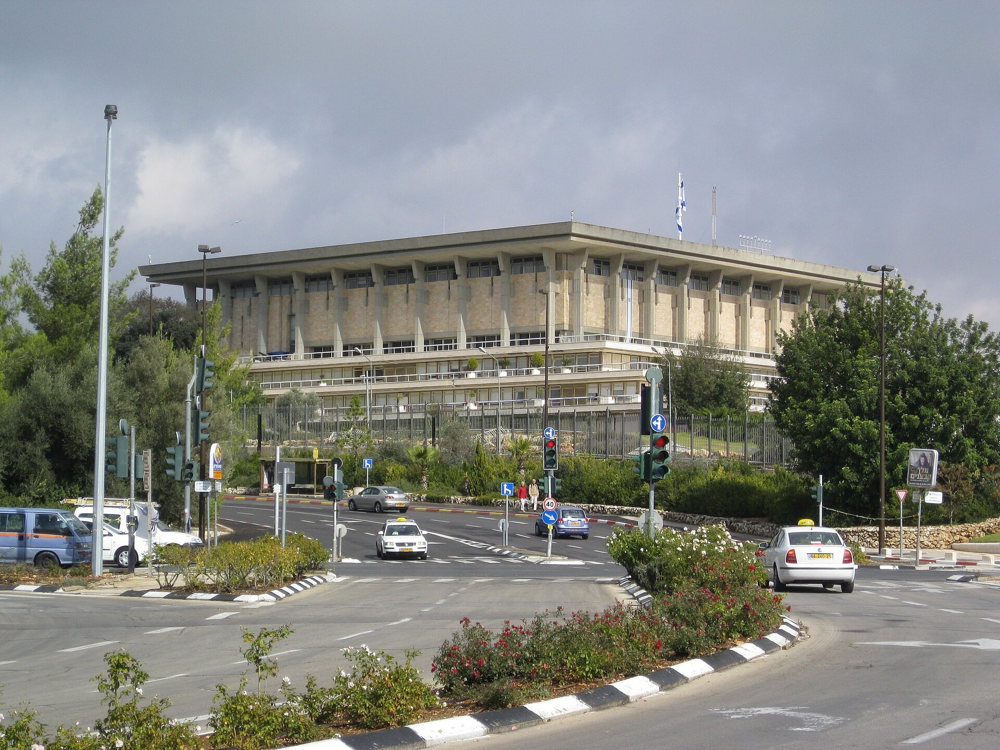

Israel's Elections Committee Bars All Arab Parties From the Knesset Vote
The decision, made before the 27 October election, must be approved by the High Court, which has overturned such bans before.

On 23 September, Israel's Central Elections Committee disqualified all Arab lists from the 27 October Knesset election — the joint list of Balad, Hadash and Ta'al, as well as the Ra'am party.
Individual candidates
The committee barred Balad chairman Sami Abu Shehadeh by a 30–4 vote; Hadash MK Ofer Cassif was also blocked from running for re-election.
The basis
The petition was filed by Prime Minister Benjamin Netanyahu's Likud faction, citing Israel's Basic Law, which bars parties that support armed struggle against Israel or negate its existence as a Jewish and democratic state.
Next step
The committee's rulings must be approved by the High Court of Justice, which sets a high bar for barring a party and has overturned such bans before, including against Balad in 2022.
Reactions
Balad chairman Sami Abu Shehadeh said: "I have never called for violence or terrorism; I oppose armed struggle and remain committed to political and civil struggle for peace, justice and equality." Ra'am called its exclusion "political and unacceptable".
In brief
- Date: 23 September 2026
- Barred: all Arab lists (Balad, Hadash, Ta'al, Ra'am)
- Abu Shehadeh: barred by 30–4 vote
- Election: 27 October; final say with the High Court